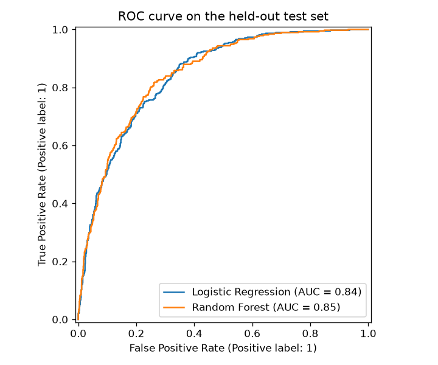
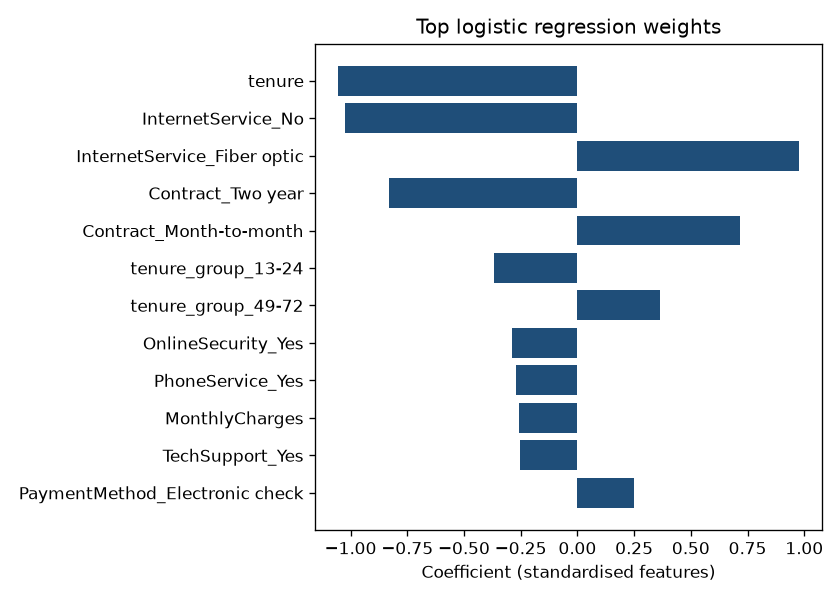

Customer profile
Predicted probability
—
Load the model to start
Unlisted fields (gender, extra add-ons, total charges) use the training-set median or most common value, except total charges, which is estimated as monthly charges × tenure. This is a statistical estimate, not a decision engine.
Test-set results
| Model | ROC-AUC | Precision | Recall | F1 |
|---|
Metrics are from a held-out 20% test set. The live estimate uses the logistic regression model at a 0.5 threshold.
Largest logistic regression weights
Positive weights raise the predicted chance of churn; negative weights lower it. Features were standardised before fitting.

